Missing Observer Studies is a time focused online cinema/journal/diary dedicated to the elongation, suspension, and untimeliness of time. Each issue is treated with care, and published indeterminately per the means and welfare of all parties involved.
huner.francis@gmail.com
ig: @huner_francis
©2020-2021
Orla Mc Hardy, No Common Sentence
2016 - 2019, 25’36
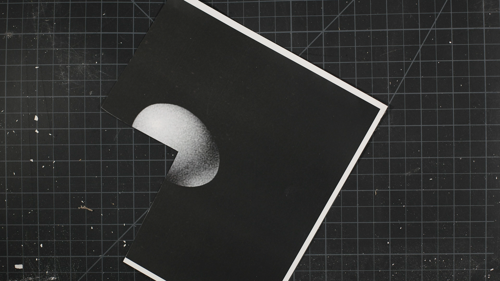 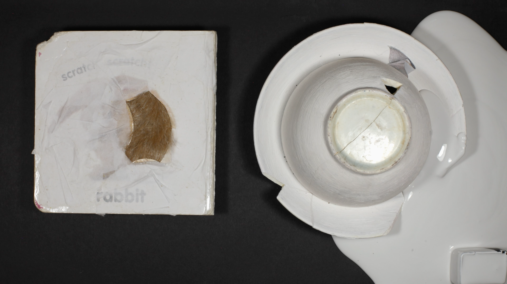 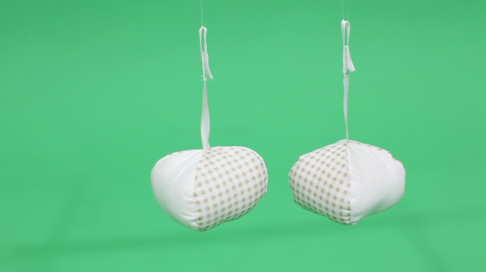
For a time. Comma.
Roseanne Johnson/Micah H. Weber
Introducing Orla Mc Hardy’s film has taken some time. Fortunately Missing Observer Studies is preoccupied in and with time: What images come from time, what relations do we have with time, and how does it touch us, change us, affect us? In what way does the time we experience require a level of engagement from us? What grammar and what language do we need to develop through this engagement, and how does it change us? Are we changed against our will, or is there an agreement that must be had by way of our engagement? To say: I am vulnerable to exteriority, undone and shaken, every day. Not as a way of being centered in a cultural narrative, but as a way of starting new, over and over again. If not only as a model for standing against the systems that codify and entangle us in hierarchies of power, but also that we may ensure they never take root again.
Normalizing and commercializing trauma is something as relative to the speed in which we consume information, as it is to our collective need to accept fissures in time so that we might go back to work, internalize the economy, build our resumes in support of the idea that if the ship sinks, at least I will not be on it.
So if the last six months has said anything about the ineffectual caretakers of history—the pundit class on television, the academic class and artist class speaking from the institutional pulpit—it is that their words and commentary read as obscenely inadequate. The problem is foundational, and like trying to respond to the sound of our own names, we are required to address the entirety of naming, and the entirety of calling, in the most holistic of ways.
Mc Hardy’s film, No Common Sentence, in part situates itself in an experience of a time very much specific to the conditions in which the artist lives as a new mother… I say this only in part, because the relationship to time we are given is also one of a developing grammar, a provisional grammar met out as a time of care, both abstracted and made specific in its opacity. The grammar of No Common Sentence is defiant, it is slow, it is repetitive, it is messy, and it ruptures conventions within cinematic language as it also retreats into a rhythmic tide pool of imagelessness.
What this does for me as a viewer is it frames the possibility that time can be felt as an imperfect experience that is learned upon and read as an archipelago of fragments, taken brokenly or as a whole. Which is to say that once we begin to read the substrate of a material—in this case the animated image—we begin to see the narratives dictating our actions, lives, fortunes, and losses, as simultaneously arbitrary and not arbitrary.
The result creates the sense that anything can happen in any moment. Which is to say there is an anarchic potential at play, one that calls for us to use the time we are dealt, as something we are to work on and develop alongside ourselves, always in relation to and through our own individual projects. Each being free as only one can be free presupposing others are also free.
But they are not free / The time that has been dealt was not crafted by the hand of its bearers.
And that is the tension arising in No Common Sentence. Not that there is commentary or criticism to be read in the film, but that there is ‘an empty bag’ of a timeline, and the time filling it is coded, wronged, difficult—and what must be made from it is an act of unmaking—a modest wiping.
In respect to what we might learn from No Common Sentence is what we hope to develop in our own ongoing work with Missing Observer Studies: Namely the development of a grammar and a small area of tension we can take solace in as we actively engage flows of time requiring practices of unmaking—in our lives, in our work and the work of others.
When we try to unmake things, we enter a wilderness. It can be a wilderness of one’s life, one’s work, one’s corporeality and mysticism. It can also be a wilderness of the before and the after. The wilderness is in utter spite of the ancient devaluation of human life by things that are made. This is what we get from Orla Mc Hardy and this is what we get from the work she does.
So much depends on the clearing away of broken dishes, on the tributaries of our attention, on the shapes of the words we redact in our dreams.
—August 13th, 2020.
MOS in Dialogue w/ Orla Mc Hardy
Missing Observer Studies takes its inspiration from artworks that deal in registers of time that challenge economies of accelerated / productive attentiveness. These artworks often traffic in practices of elongation, suspension, and inefficiency. As No Common Sentence is the focus of our inaugural iteration of MOS, and the film was originally framed within the context of a larger body of work, I was wondering if we could start with some background on that work and how your film sits within it.No Common Sentence was first shown as part of my solo show, Nitefeedz, which took place in the RHA, Dublin in Spring, 2019. It was a large installation composed of sculptural objects, collages, a photo, a kinetic sculpture set to go off intermittently on a timer, monitors, projections - all spread out over two large rooms. Born out of what Lisa Baraitser identifies as “constant interruptions to thinking, reflecting, sleeping, moving and completing tasks [...], what is left is a series of unconnected experiences that remain fundamentally unable to cohere.”1 Nitefeedz poses the question as to whether a new, formal language could be created for the time-intensive medium of animation, at a moment when there’s less time because of the issue being interrogated. Taking these interruptions as generative, the work looks to connect provisional gestures to acts of provisioning and care.
“I have tried to keep my eye on the miniscule and rather overlooked instances in which we are wrong-footed or undone by mothering. I argue that these moments have in common a capacity to disrupt, producing a small blank in experience that at once arrests and provides new points of departure.”
Lisa Baraitser, Maternal Encounters - Ethics of InterruptionI screened a slightly different cut of No Common Sentence in my show. In that version the intermittent black sections were much longer. This meant you could never see the whole show in one go, you’d always be missing something. You’d be in another room, hear the crash on the soundtrack from one of the scenes in No Common Sentence. By the time you’d come back to see what had caused it, the screen had returned to black. For me all the elements in the show were equally weighted. In a way, with No Common Sentence, I was trying to collapse the time based logics of sculpture, animation, and still images together- I was trying to see what different registers of time and attention were possible. How could different forms of attention flow across and inform the different media?
The first step in installing Nitefeedz, was how to configure the space into a peering and stumbling bodily experience that made sense to the work and the experience of making it. To do this the objects were placed low to the ground on custom made painted plinths. The walls were painted three foot up from the ground in the same dark, aubergine colour - a colour I’d eye-dropped from sinkholes that featured in stills exported from the old Looney Tunes, Roadrunner series. These were frames in which Roadrunner held up a sinkhole for Wile E. Coyote to fall through (over and over). The sinkhole of the repetitive stuck time of caregiving.
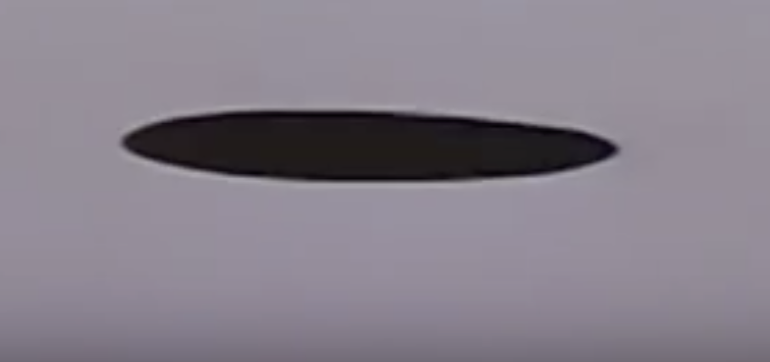
“I cannot hold my baby at the same time as I write.”
Maggie Nelson, The ArgonautsI started this body of work in October 2016, when my first child was 6 months old. The following summer I would become pregnant again. My second child was 10 months old when I installed the show. A friend told me about Maggie Nelson’s The Argonauts, when I was pregnant with my firstborn. This piece of auto-theory was the first thing I’d read about the experience of pregnancy, motherhood and the limits of language that made sense to me. It also gave me the permission to see the experience as a valid mode of critical research - both embodied and theoretical. It started me on a path of reading a lot of books by women, some biological mothers, some mothers in the broadest sense - Moyra Davey, Lisa Barraitser, Rachel Cusk, Audre Lorde, Alice Notley, Mierle Laderman Ukeles, Donna Haraway, Silvia Federici, Maria Puig de la Bellacasa, Anne Boyer, Chris Krauss were among them.
The body of work was made at the edges, in between a full time job (in a country with no mandated maternity or paternity leave), looking after the kid(s), being pregnant and often very sleep deprived. It was made 10 minutes here, 10 minutes there. The black gaps speak to the sensation of feeling bombed out, of not being able to think, a blank. And yet, there were also ways in which it was a very liberating experience. I was completely in a (non-reflexive) present that was out of step with linear capitalist clock time and fully committed to the phenomeum at hand.
Sometimes the only time I’d have for ideas was when I was sleeping. I’d dream up imaginary art shows that friends and family had made, wake up and sketch them down, and then slowly in the studio - work elements of them into collage and then into objects. As I was always so tired, I didn’t have the energy to overly reflect/self criticise (the black gaps) this process- so I just went with what felt good. Finding moments of pleasure in the process was important. It’s hard to know what quality means when you don’t have the time to consider it. When getting anything made seems like an achievement. By the end, knowing there’d be a show in Dublin whether I was ready or not, I accrued a suite of objects and moving image works. Odd, hard won, but true to themselves. Now I look at them slightly askance, but tenderly. They are witnesses to a very particular set of experiences, and I’m grateful for the focus they gave me.
The title No Common Sentence comes from Virginia Woolf’s A Room of One’s Own. I read this as a reference towards you having to create a specific grammar for an experience of time where there is none to be found. What does the idea of a “common sentence” mean for you?
I think this excerpt from The Carrier Bag Theory of Fiction by Ursula K. Le Guin, goes some way to answering this;
“That story not only has Action, it has a Hero. Heroes are powerful. Before you know it, the men and women in the wild-oat patch and their kids and the skills of the makers and the thoughts of the thoughtful and the songs of the singers are all part of it, have all been pressed into service in the tale of the Hero. But it isn't their story. It's his.
When she was planning the book that ended up as Three Guineas, Virginia Woolf wrote a heading in her notebook, "Glossary"; she had thought of reinventing English according to a new plan, in order to tell a different story. One of the entries in this glossary is heroism, defined as "botulism." And hero, in Woolf's dictionary, is "bottle." The hero as bottle, a stringent reevaluation. I now propose the bottle as hero. Not just the bottle of gin or wine, but bottle in its older sense of container in general, a thing that holds something else.”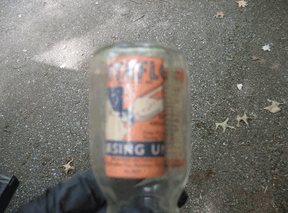
There is a repetition of a swiping motion, the moving object being a well worn cutting mat, and two types of touch, one being a sensitive touch, the other a cutting touch. They strike me as repetitive but also on opposite ends of the spectrum. Could you talk a little about the relationship between the images you make and the labor that goes into the images you make?
I seem to be always wiping something or someone.
Once defined by the technique or technologies used in its making, I consider animation to be a complex set of practices, where expanded animation is that which asks questions of the medium itself.
The day-in-day-out time of caregiving and juggling a job is relentless. Sometimes I’d get an urge to stick a fork in my head. Then I get some sleep or watch a Shonda Rhimes show and feel ok again.
Using movement and motion capture as a way of mapping somatic
knowledge. Back and forth, back and forth. Cut, cut, swipe, repeat.
Thinking about care and what this means in relation to sustaining/maintaining a sense of self, an active art practice. Giving up the word practice for work. Where value is placed on time, whose time is worth more? What does that enquiry mean for a time based media?
“but I can say that paying attention to a singular person or thing can be a way of expressing love, of paying homage to their uniqueness, their difference from everything else that exists. And that paying that kind of attention can be a way of understanding difference as something that holds us together rather than signifying our apartness.” What’s Queer Form Anyway? an interview with Maggie Nelson
(like the collages, sculptures in Nitefeedz?)
“If your work is autobiographical, you are the theory”. Tiona Nekkia McClodden in a studio visit to Kate Turner, recounted to me by Kate during a studio visit I had with her.
Patchwork - making do - the work is done when the time is up.
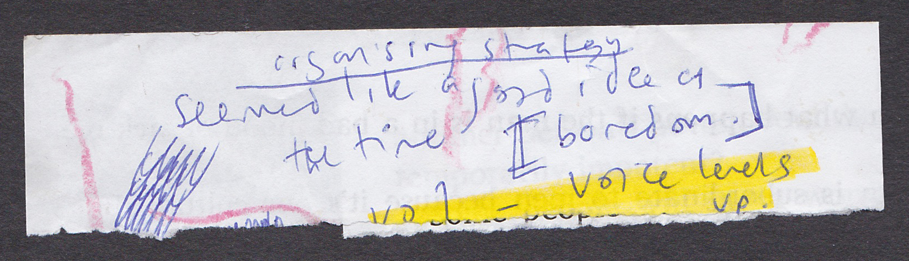The form of the work feels like it is in part a collection of brief flashes of creativity, organized episodically, and yet made up of materials that have been collected over a long period of time. They read as a disarray of moments, and bodily fluids that move for play. Is play in this sense a constraint on your work, or a condition you have had to adapt to?
‘C: Maintenance is a drag: it takes all the fucking time’ 2
‘C: Maintenance Animation is a drag: it takes all the fucking time’ (my own edit)When I think of animation and motherhood together disjunctures and overlaps happen. Words and phrases that come to mind are: absolutely nothing ---- complete blackness, blanks, love, repetition, close attention, time, attempts, exhaustion, death, play, broken parts, interruptions, boredom, limitlessness, limited, generative, tears, touch, othering, immediacy, staying with, fun, embarrassment, embodied, sensuous, sentient awareness, spilling, colours, resilience, kisses, gristle, snot, noise, mess, melting bodies, heaps, wiping, laughing, elasticity, acceptance, failure, fluidity, agency, performance, queerness, invisible labour, stealth, skill, magic, dream-logic, unknowing, being patronised, feminism(s), speculation, fear, flab, joy, a certain impossibility at capturing boundlessness, a non reflexive present, opening the flashlight one day and finding a pacifier jammed in where the battery ought to be.
My studio work has had to adapt to fit in around nap times, pick up/drop offs, teaching classes, meetings, home maintenance, and wiping, (always wiping!). Taking the interrupted time of caregiving as generative, not just conceptually, but also in practice, I must work flexi-time, quickly and in bursts, understanding that animation is at its core a re-enactment of the accumulation of minor instances over time. Over time, I take, collect, work with and edit what is at hand.
While a constraint, I’ve chosen to find ways of taking the interrupted time of caregiving as being generative. My daughter, Íde, has always played intensely. She plays fast and loose with materials in a way that delights and inspires me. Any sense of prior material expectation is upended. I watch her ecstatic gestures, unselfconscious play for its own sake with joy and awe. Living alongside her creative logic has been fantastically liberating and inspiring. And it's been a wake up call of sorts. Since having kids I’ve never taken my work more deadly seriously and less seriously at the same time.
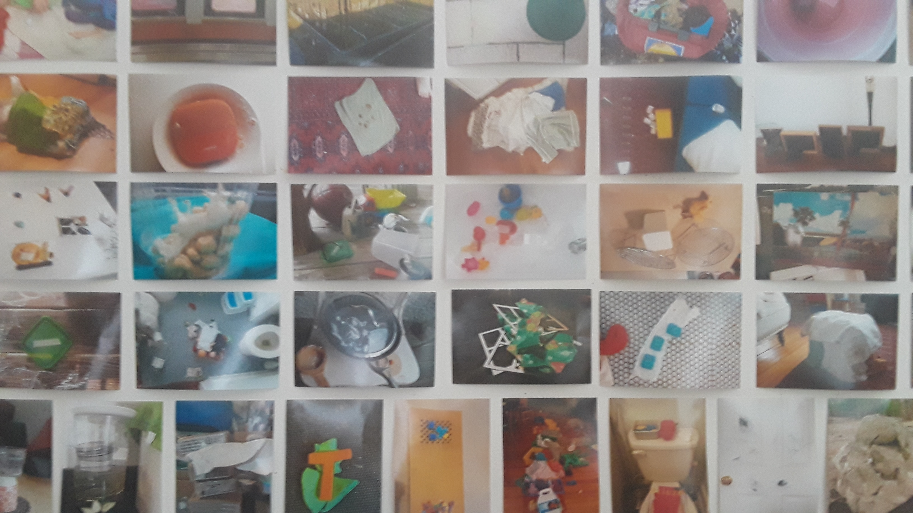
What about the images of danger? The car crash, a pacing lion, breaking glass? Materially they read to me as jarring punctures in the hypnotic space you develop and as another kind of physical touch I feel as a viewer.
I know a lot of women who have stopped making work since they became mothers - I almost wanted to make this as a fuck you to that reality. It is also a shout out to all the mothers and caregivers who have been rendered invisible, whose time, labour and expertise are undervalued. Putting this work out there in public in a less than perfectly thought out state - standing by it all the same.
For me, being a full time working mother is at times/can be mind bendingly exhausting and isolating. At times it really nearly broke me. Sometimes, I’d have moments when I was so tired, that I’d imagine smashing my head through the glass in the door just for the relief. Or I’d feel like my head was full of gristle, broken plates and meat-jaggedy bones thoughts. A sense of under-looming violence. And then, you push that all down, drink another coffee and go do your job.
You use citation throughout your film, one being a hypnosis pendulum of Emma Kunz, the German-Swiss artist and healer, can you talk a little about the connection you are making between her and your work? Do you see a kind of divination occurring as well?
“I believe in fiction and the power of stories because that way we speak in tongues. We are not silenced. All of us, when in deep trauma, find we hesitate, we stammer; there are long pauses in our speech. The thing is stuck. We get our language back through the language of others. We can turn to the poem. We can open the book. Somebody has been there for us and deep-dived the words.” -Jeannette Winterson, Why Be Happy When You Could Be Normal?
While citation is very important in my work, as a way of invoking community, kinship, lineage and making connections across times and lived experiences, I can’t remember exactly how I came upon this image. And to be honest I don’t know all that much about Emma Kunz, except that her work is intensely beautiful. I do not know the specifics of how this related to her drawings. And yet I carry this image of which I don’t fully know the origin around with me.
As for my own form of divination? Maybe it is a quiet trust in the process, a trust in the inward turn, a trust in dream logic, a trust of something being done because you’ve no more time to give to it, a trust in the lessons felt in a body and the intuition, a trust in the hard edit.
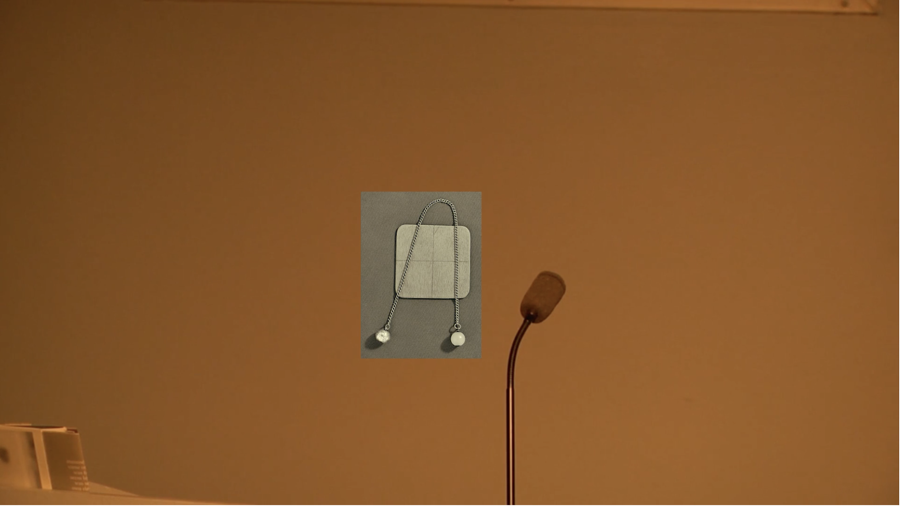
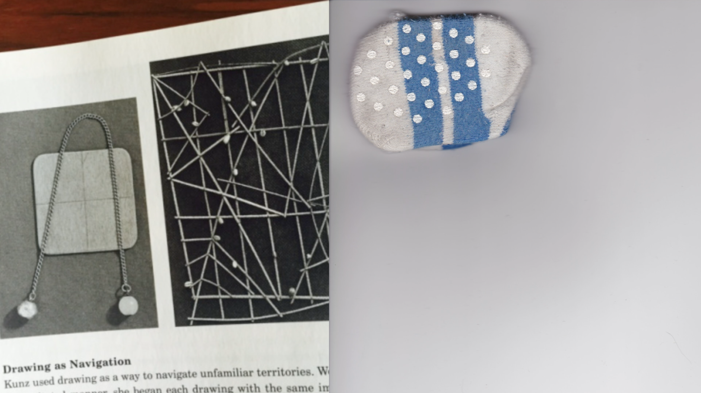
Finally, what does working in time-based art do for you?
I think women are supposed to open their legs to time and let it pass through them.
-Eileen MylesI love how you ask what “it does for me” - that feels like such an active term of engagement. It also has a connotation of bodily pleasure. And I appreciate this. Time based art for me is linked to the body - our only way to understand time is how we feel it in our bones, how we age, how well we sleep, how we pass the day, how we pass the years, how we feel pleasure, how we process disappointments and loss. How can feelings of time be transferred and translated? How can the edit be a form of writing, of thinking through these ideas and experiences?
“This is a paper bag, it is full” - For some reason I wrote this on a scrap of paper and it has stayed with me as an operating principle when editing. I imagine it as an alternative way of populating a timeline. I’ve been thinking alot about timelines - thinking about how the presumed linear logic of the timeline in editing software does not adequately represent the lived experience of maternal time and the ongoing time of caregiving. I imagined my clips in a paper bag and wanted to shake this bag up and see where they landed. I imagined that such a timeline would better represent the time of caregiving, in which needs (and clips) are stacked, overlapped, layered, dimensional, interrupting each other while propping each other up.
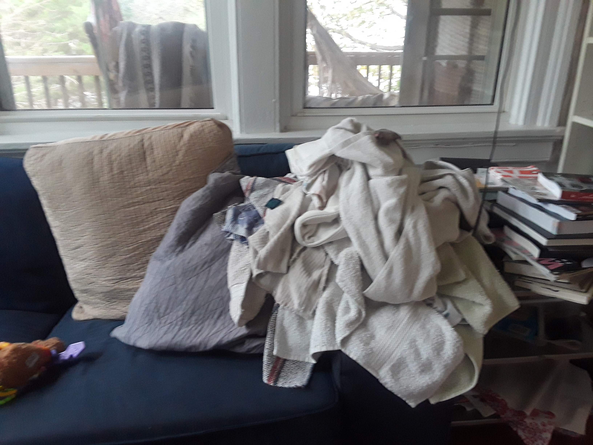
During an artist talk, Nancy Shaver, held the floor and talked about her work while scrolling back and forth between the images in her slideshow powerpoint. Sometimes she’d flip back and forth over two images, then she’d skip on ahead to another image, then back a few before - all the while talking over this slippery display. And yet profound connections happened between the story she was telling and the seemingly arbitrary images she was moving through. The sliding quality of the movement of the images reflected the physical movement of her hands. This made me think of another way to edit. The stacked/flowing mechanisations seemed like appropriate moves to incorporate into my own speculative timeline.
The time of maintenance appears to contain two temporal forms. In part maintenance is about trying to keep something going - keeping things functioning or in a steady state, allowing what already exists to continue to persevere, to carry on being……….Maintenance is not the time of generation or production, or the eruption of the new. It is not revolutionary time, but the lateral time of ‘on-go’ that tries to sustain an elongated present…….The time of maintenance lies therefore at the intersection between the lateral axis of stumbling blindly on, and the vertical axis of holding up.3 (*my own emphasis)
I’m currently working on the second part of No Common Sentence, and I’m beginning to explore ways in which the Z-axis can be a space to explore the ‘stuck’ time of mothering and maintenance, a bearing down on the present. The 3D virtual space is defined by the presence of a Z axis. This axis gives an illusion of depth, stackedness, and allows the user to move backwards and forwards through time and space, heightened by the possibility of roving across (X axis) and up and down (Y axis) the available space.
If the ‘our’ is to have any meaning in the normative judgement of ‘our times’ in the world- political present, then explanation and normative judgement of ‘our times’ has to become sensitive to a multiplicity of times and temporalities.4
In paying close attention to what is specific to maternal time and why this time matters, I’m uncoupling maternity and femininity to interpret the maternal in the broadest sense. This opens the maternal to include any act of ongoing caregiving and maintenance, of staying alongside another, whether “that is of their birth, adopted, fostered, community, surrogate or ‘other’ children.”5 If we take this ‘other’ child that we are to care for as non-human, a project, an ecology, a system - how can close attention to the time of maternal care reveal possibilities about thinking and living in more-than-human-worlds?6 Where maintenance is the temporal expression of care, it is also a set of “durational practices that keep ‘things’ going; objects, selves, systems, hopes, ideals, networks, communities, relationships, institutions.” What can maternal time teach us about ‘taking care’ of time in a moment when the ways we imagine and experience time are changing dramatically in the face of the current pandemic, unprecedented sociological inequalities and intense ecological uncertainty?
It is imperative that we pivot to a modest turn - the constraints of social distancing and the unimagined implications of the pandemic forcing this on us. I’m thinking of how it is necessary to reactivate local networks. Our lived experiences and daily activities are forms of knowledge and expertise that exist outside of institutional frameworks. What about the potential of hyper-local networks? Like gathering to pore over the scalps of loved ones during a lice outbreak, community mourning after the death of a close neighbour, the moment before giving birth, the daily porridge making routine, singing made-up lullabies, adding scraps to the compost heap, folding laundry - all intimate time based activities, all possible inward turns - and all with the potential to be quietly, but radically instructive.
Time-based art can hold all of this.
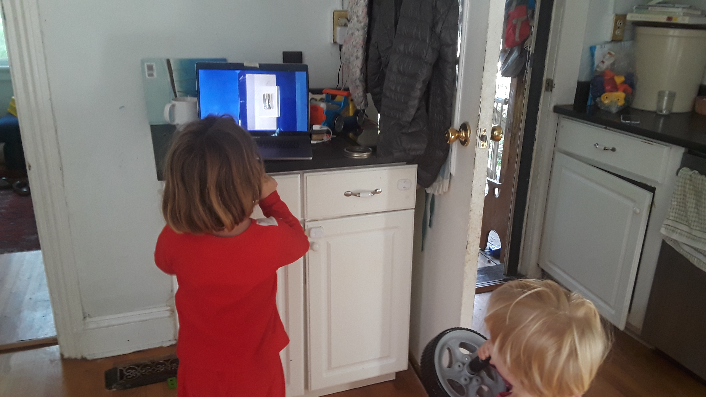
1. Lisa Baraitser. Maternal Encounters: The Ethics of Interruption, Routledge, London and New York, 2009
2. Mierle Laderman Ukeles, Maintenance Manifesto, 1969
3. Ibid, 67
4. Kimberly Hutchings, Time and World Politics: Thinking the Present, Manchester University Press, 2008, 157
5. Lisa Baraitser. Maternal Encounters: The Ethics of Interruption, Routledge, London and New York, 2009, 10
6. Maria Puig de la Bellacasa. Matters of Care: Speculative Ethics in More Than Human Worlds, University of Minnesota Press, Minnesota, 2017Orla Mc Hardy is an artist & educator who lives and works between Donegal (IRL) and Richmond, Virginia (USA). She is currently an Associate Professor and Graduate Director in the Dept. of Kinetic Imaging at Virginia Commonwealth University, Richmond, Virginia.
Contact: omchardy@gmail.com | orlamchardy.com
Missing Observer Studies:
edited by M. Weber, w/ opening essay by R. Johnson & M. Weber.
huner.francis@gmail.com
← Browse the Catalogue